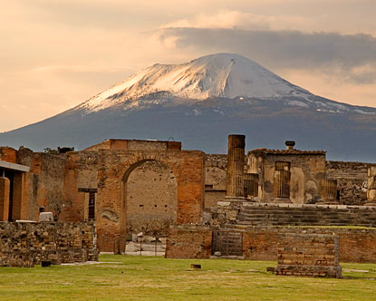

|  | During the excavation, it was thought that the people of Herculaneum died of asphyxiation presumably from thermal shock. More than 300 bodies of the total population of 5000 were uncovered. The adults and valuables were found at the top of the lava, while the children were buried deeper down. Eighty intact bodies were discovered in twelve store rooms on the coast. Using DNA test, high powered microscopes, and 3-D forensic techniques, scientists were able to recreate faces of some of the people in Herculaneum. Their appearance was not too dissimilar from us. |